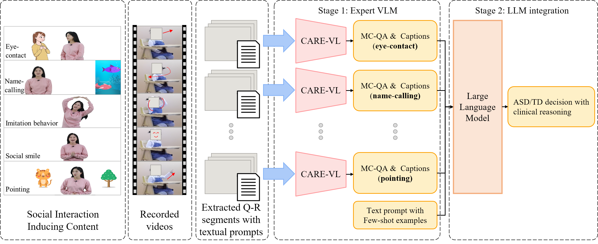
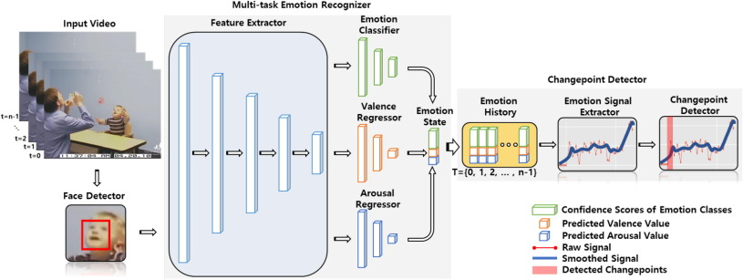
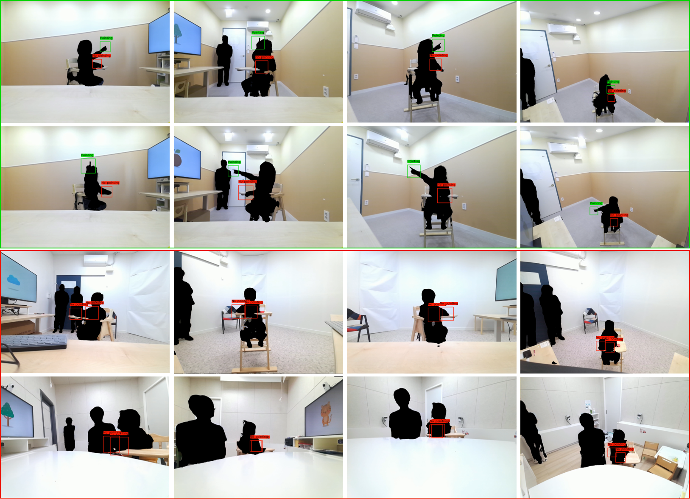
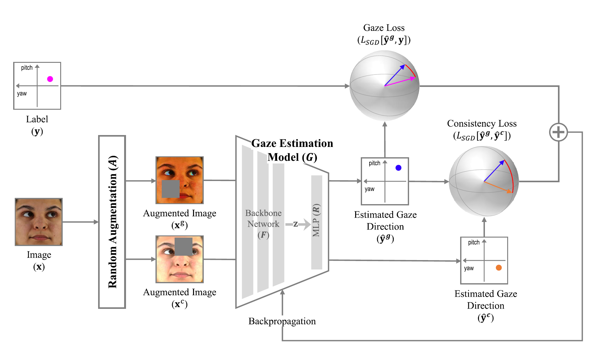
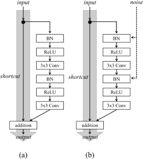
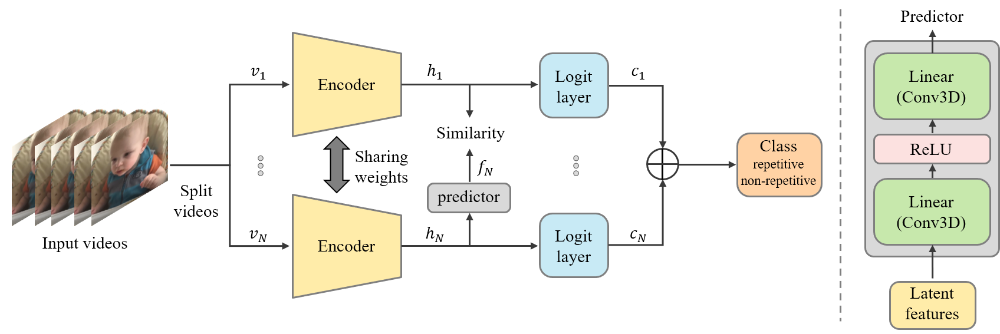
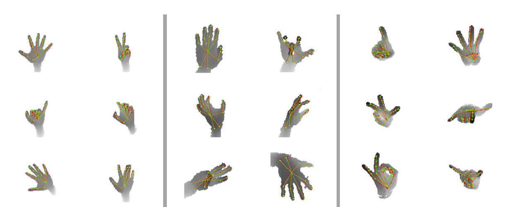
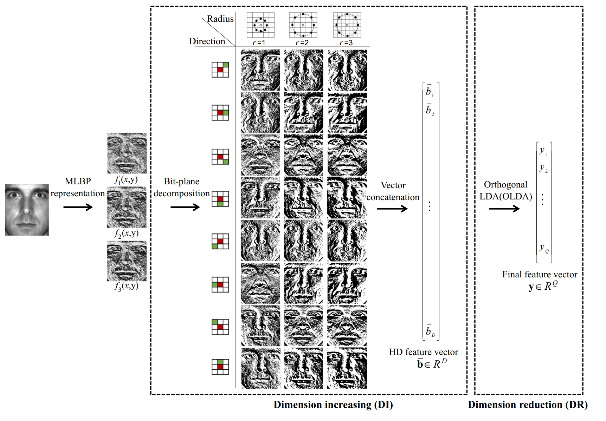

Publications
2025

2024

2023



JournalImproving Domain Generalization in Appearance-Based Gaze Estimation with Consistency Regularization [paper]
IEEE Access, 2023

JournalEffective Shortcut Technique for Generative Adversarial Networks [paper]
Applied Intelligence, 2023
2022

ConferenceSimple Yet Effective Approach to Repetitive Behavior Classification based on Siamese Network [paper]
International Conference on Pattern Recognition (ICPR), 2022
2020

JournalFast and Accurate 3D Hand Pose Estimation via Recurrent Neural Network for Capturing Hand Articulations [paper]
IEEE Access, 2020
2019
JournalSelective Sampling and Optimal Filtering for
Subpixel-Based Image Down-Sampling [paper]
IEEE Access, 2019

JournalContext-Aware Encoding for Clothing Parsing [paper]
Electronics Letters, 2019
2018

JournalA Robust Extrinsic Calibration Method for Non-Contact Gaze Tracking in the 3-D Space [paper]
IEEE Access, 2018
JournalSubpixel Rendering for the Pentile Display
Based on the Human Visual System [paper]
IEEE Transactions on Consumer Electronics, 2018
2017

JournalHigh-Dimensional Feature Extraction Using Bit-Plane Decomposition of Local Binary Patterns for Robust Face Recognition [paper]
Journal of Visual Communication and Image Representation, 2017
JournalLBP-Ferns-Based Feature Extraction for
Robust Facial Recognition [paper]
IEEE Transactions on Consumer Electronics, 2017
For a complete list of publications, visit my Google Scholar profile.